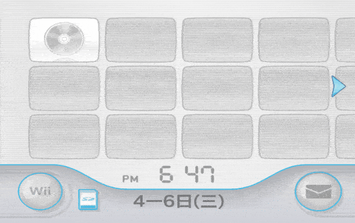
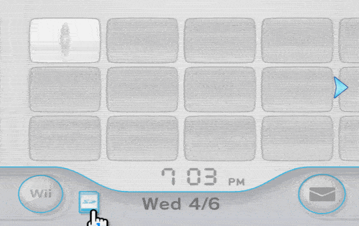
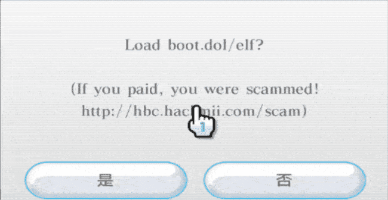

Bannerbomb
Bannerbomb使用格式错误的横幅触发漏洞
你需要
- 一张不超过2G的SD卡或不超过32G的SD卡(仅系统版本4.0及以上),并用SD Memory Card Formatter 备用下载 格式化SD卡
- 一台系统版本为3.0-4.2的Wii
步骤
- 前往Wii设置,在右上角查看Wii系统版本
- 根据系统版本选择漏洞
Bannerbomb v1 备用下载 仅适用于系统版本3.0-4.1的Wii
Bannerbomb v2 备用下载 仅适用于系统版本4.2的Wii
- 将zip文件解压到SD卡根目录
- 从这里获取HackMii,将boot.elf复制到SD卡根目录
- 将SD卡插入Wii并打开
- 对于Bannerbomb v1:进入Wii菜单-数据管理-频道-SD卡

- 对于Bannerbomb v2:点击主菜单上的SD卡菜单

- 你会看到一条消息,提示"Load boot.dol/elf?",点是 如果黑屏或没看见,从Bannerbomb重新下载

如果不成功，请使用其它漏洞
感谢WiiBrew和Wii Guide!